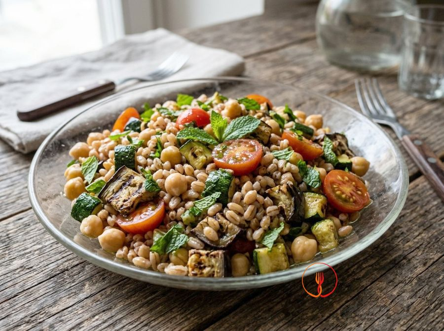

Spelt, chickpea and grilled vegetable salad
A cold main dish with pearled spelt, chickpeas, grilled courgettes, aubergines and mint.
Ingredients
- Pearled spelt250 g
- Cooked chickpeas240 g
- Courgettes250 g
- Aubergines250 g
- Cherry tomatoes200 g
- Fresh mint5 g
- Extra virgin olive oil50 ml
- Lemon juice20 ml
- Fine salt6 g
Allergens
Gluten
May contain traces of: Celery.
Method
- Begin by bringing a pot of lightly salted water to a boil (use about 3g of the total 6g of salt). Add 250g of pearled farro and cook over medium heat for about 25-30 minutes until the grains are tender but still pleasantly al dente. Drain well and rinse under cold running water to stop the cooking process and keep the grains separate.
- While the farro is cooking, wash and prepare the vegetables: slice 250g of zucchini and 250g of eggplant into regular slices about half a centimeter thick. Uniform thickness is essential to ensure all slices cook in the same amount of time without risking burning some while others stay raw.
- Heat a grill pan or a non-stick skillet very well over high heat. Grill the zucchini and eggplant slices for about 3-4 minutes per side until you see the classic brown char marks and smell the intense aroma of toasted vegetables. This step is essential to give the dish a delicious smoky note.
- Once grilled, let the vegetables cool for a few minutes, then cut them into strips or smaller cubes to make them easy to enjoy. Meanwhile, wash 200g of cherry tomatoes and simply cut them in half so they release their fresh juice while maintaining their texture.
- Prepare the dressing emulsion in a small bowl: combine 50ml of extra virgin olive oil with 20ml of lemon juice and the remaining 3g of fine salt. Whisk vigorously with a fork until you get an opaque and slightly thick liquid; the emulsion helps to distribute the flavors evenly over every ingredient.
- Take a large serving bowl and pour in the cooled farro along with 240g of boiled chickpeas, making sure to drain them perfectly from their preservation liquid. Add the grilled vegetables and cherry tomatoes, stirring gently from bottom to top so as not to break the legumes.
- Tear 5g of fresh mint by hand, avoiding a knife to prevent the leaves from blackening, to release all its essential oils. Add it to the salad along with the oil and lemon emulsion, mixing carefully so that every grain of farro appears shiny and well-coated.
- Let the salad rest at room temperature or in the refrigerator for at least 15 minutes before serving. This resting time is the chef's secret: it allows the flavors to meld perfectly, making the final dish much tastier and more harmonious.
Nutrition facts (estimate)
| Per serving (380 g) | Per 100 g | |
|---|---|---|
| Energy | 1749 kJ / 418 kcal | 460 kJ / 110 kcal |
| Protein | 14 g | 3.6 g |
| Carbohydrates | 55 g | 14 g |
| of which sugars | 6.7 g | 1.8 g |
| Fat | 14 g | 3.8 g |
| of which saturates | 2.0 g | 0.5 g |
| Fibre | 12 g | 3.0 g |
| Salt | 1.8 g | 0.5 g |
AI estimates based on average CREA / USDA data: indicative only, not a substitute for medical or dietitian advice.
Open the recipe in the app for the shopping list, ingredient sheets and nearby shops.